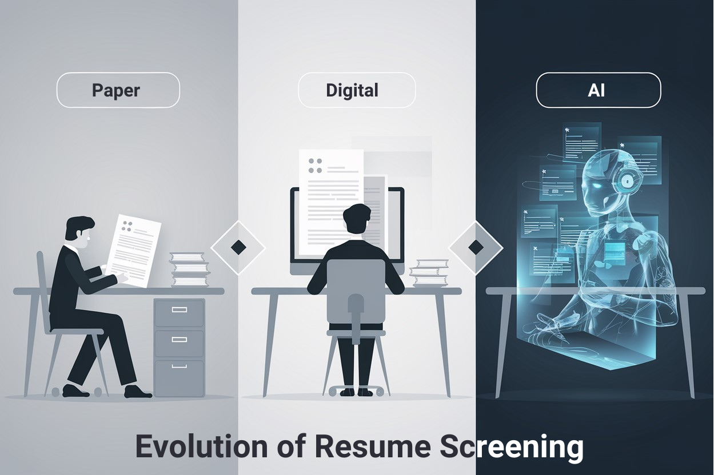
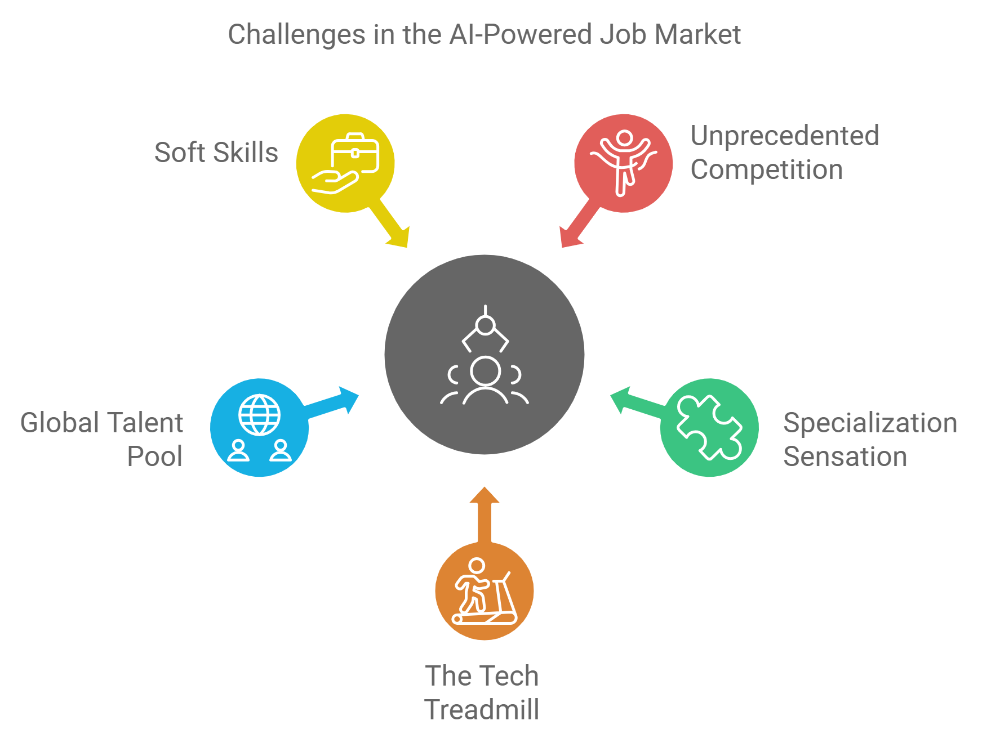
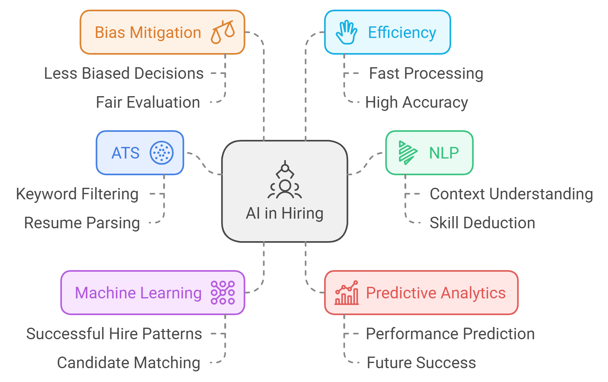
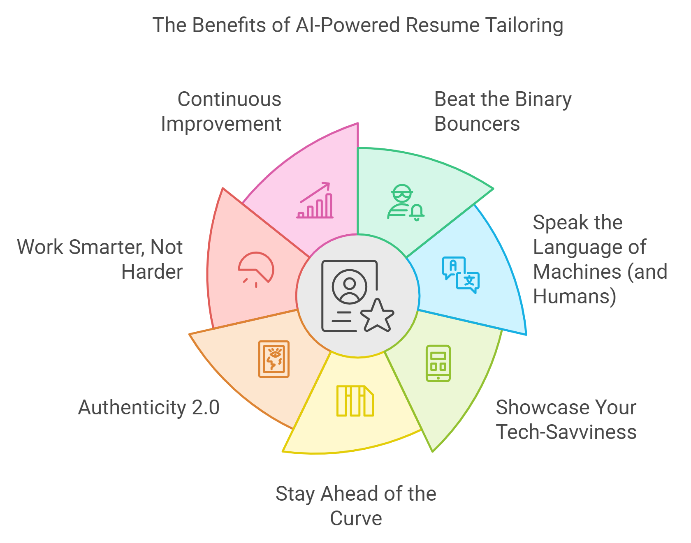

I. Introduction: Navigating the AI-Powered Job Market
Welcome to the Guide! If you're reading this, you're likely wondering how to make your resume stand out in the highly competitive STEM job market. Fear not, because this is the ultimate guide to transforming your CV from average to outstanding using AI-powered techniques. Get ready to upgrade your resume and boost your chances of landing that dream job!
A. The Evolution of Resume Screening in STEM: From Human Eyes to Robot Scanners
Remember the good old days when you could impress recruiters with a well-formatted resume (i.e. snazzy font) and a compelling cover letter? Well, those days are as extinct as floppy disks and dial-up internet.

Here's what you're up against in today's tech talent thunderdome:
- Unprecedented Competition: You're not just competing with the folks in your zip code anymore. Thanks to remote work, you're now up against the entire global population. It's like a worldwide game of "Who Wants to Be a Software Engineer?"
- Specialization Sensation: Gone are the days when knowing "computers" was enough. Now, companies are looking for a React Native developer with experience in quantum computing who can also juggle (figuratively, but sometimes literally) while coding in Rust.
- The Tech Treadmill: If you thought keeping up with Game of Thrones plotlines was hard, try keeping pace with tech trends. That cutting-edge skill you learned last year? It's probably considered vintage by now.
- Global Talent Pool: The world is your oyster, but it's also everyone else's. You're now competing with that brilliant developer from Bangalore and the coding prodigy from Prague.
- Soft Skills: The Cherry on Top: Plot twist – being a coding hermit is out of style. Companies want tech geniuses who can also charm clients and explain complex algorithms to their grandmothers.

"In the current STEM job market, your resume isn't just a document; it's your personal advertisement in a Times Square of tech talent." - Probably some wise career guru
B. The Role of AI in Modern Hiring: When Robots Become Recruiters
Enter the era of AI-powered hiring, where your first interviewer might be an algorithm. It's like dating apps, but instead of swiping right on potential soulmates, AIs are swiping right on potential employees. Here's how these silicon cupids are playing matchmaker in the job market:
- Applicant Tracking Systems (ATS): Think of these as the bouncers of the digital job club. If your resume doesn't have the right keywords, you're not getting in. No VIP list here – just a Very Important Parser.
- Natural Language Processing (NLP): These algorithms are like the Sherlock Holmes of the digital age, deducing your skills from the context clues in your resume. They know you're great at "data analytics" even if you call it "number crunching wizardry."
- Machine Learning for Pattern Recognition: Imagine an AI that's binge-watched every season of "America's Next Top Employee." It knows the patterns of successful hires and is looking for the next star.
- Predictive Analytics: Some AIs are trying to predict your job performance based on your resume. It's like Minority Report, but for your career prospects.
- Bias Mitigation: In a plot twist, these AIs are programmed to be less biased than humans. They don't care about your profile picture or if you went to the same school as the CEO's kid.
- Efficiency and Speed: These systems can go through resumes faster than you can say "You're hired!" It's like speed dating, but for your career.

Case Study: The Tale of Two Resumes
Meet Alex and Sam, two equally qualified software engineers applying for the same job. Alex submitted a traditional resume, while Sam used AI tools to tailor theirs. The ATS ranked Sam's resume in the top 5%, leading to an interview and job offer. Alex's resume, despite its quality, was lost in the digital haystack. The moral of the story? In the age of AI recruiting, it's not just what you know, but how you present it that counts.
C. Why Tailoring Your Resume with AI is Crucial for Success: Adapt or Be Overlooked
At this point, it appears you must be half-human, half-algorithm to land a job. Fortunately (especially for me) that's not quite the case, but embracing AI in your job hunt is no longer optional – it's as essential as coffee during a late-night coding session. Here's why you need to befriend the bots:
- Beat the Binary Bouncers: Tailoring your resume with AI insights helps you sneak past those pesky ATS filters. It's like having the secret password to the exclusive tech party.
- Speak the Language of Machines (and Humans): AI-powered tailoring ensures your resume resonates with both the algorithms and the humans behind them, i.e. being bilingual in Human and Robot.
- Showcase Your Tech-Savviness: Using AI to optimize your resume is a meta-demonstration of your tech skills. You're essentially saying, "Look, I'm so good with technology, I even use it to apply for jobs!"
- Stay Ahead of the Curve: As AI systems evolve, so should your resume strategy. It's an arms race, and your weapons are keywords and well-structured data.
- Authenticity 2.0: Balancing AI optimization with your unique story is the new art form of resume writing. Think of it as painting a self-portrait using a smart brush.
- Work Smarter, Not Harder: AI tools can help you tailor your resume efficiently, giving you more time to practice your "Why should we hire you?" speech in front of the mirror.
- Continuous Improvement: AI can provide insights into your resume's performance, helping you refine your approach.

Pro Tip: Think of AI as your career co-pilot, not the autopilot. Use it to enhance your human creativity and insight, not replace it. After all, the goal is to land a job, not to convince the ATS's AI that you're its long-lost silicon sibling.
As we embark on this journey of AI-powered resume optimization, remember: the robots are here to help, not to take over (at least, not in the job application process). In the coming chapters, we'll dive deeper into the bits and bytes of crafting the perfect tech resume, exploring everything from keyword optimization to the art of quantifying your achievements in a way that makes both algorithms and humans sit up and take notice.
So, polish your skills, fire up your neural networks, and get ready to turn your resume into a testament to your tech prowess. By the end of this guide, you'll be so good at AI-powered resume tailoring, you can apply for a job as an ATS yourself!
Ready to revolutionize your resume? Let's dive in!
Key Takeaways: Mastering AI-Powered Resume Tailoring
- Embrace AI tools to tailor your resume efficiently and improve your chances of passing through ATS filters.
- Understand the specific job requirements and adapt your resume accordingly to appeal to both algorithms and human recruiters.
- Balance technical achievements with soft skills that showcase your ability to work in a team and communicate effectively.
Ready to Take Action?
Now that you've learned about the importance of AI-powered resume tailoring, it's time to put that knowledge into practice. Use AI tools like Jobscan or ResyMatch to start optimizing your resume today. Visit our website for additional resources, templates, and personalized coaching services to help you tailor your resume for success in the STEM field.